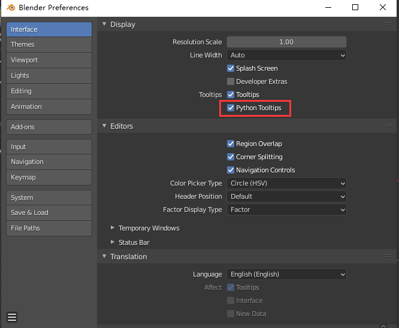
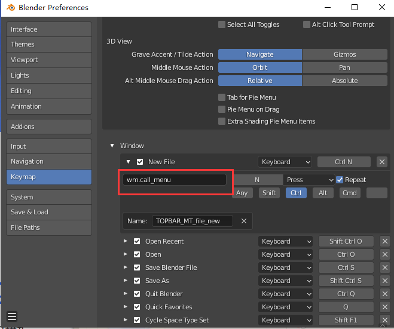
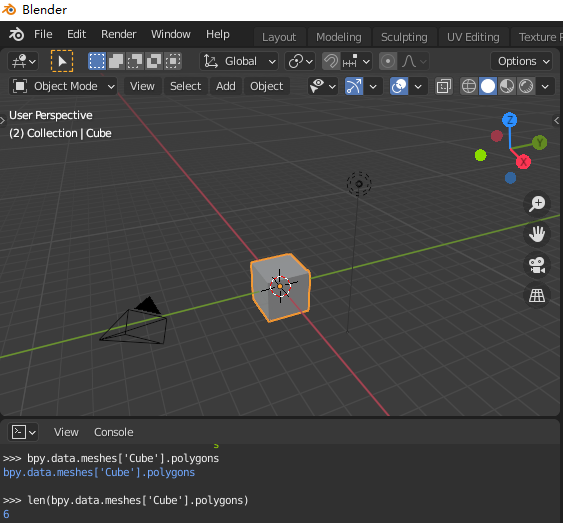
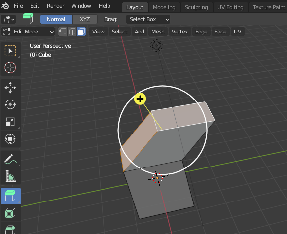
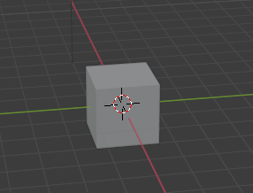
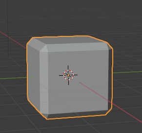
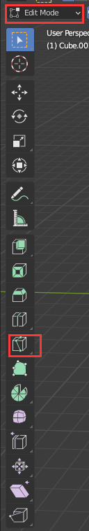
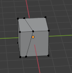
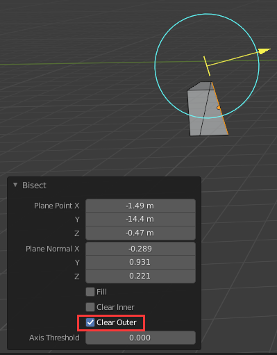

Blender学习笔记
其实这篇笔记是在我纠结了很久之后才写的,一方面是 Blender 作为一款处于成长期的 3D 建模软件,
它会经常更新以及改变,就最近而言,在 2019 年发布的 2.8 系列和以前的版本相比就变化了好多.
而时间点位于 2021 年的现在,市面上很多的书籍都是针对 2.7 的.
没有合适的书籍对于我来说是一个很严重的问题: 本人不太习惯通过看视频/听课来学习,反映速度跟不上.
这是第二个方面了,我只能看视频来学习这款软件,看视频得到的内容很容易被"左耳进右耳出",所以写笔记是必须的.
但是,在不久的将来 Blender 的更新可能会让这些笔记的内容失去价值,日后不能用于参考.
因此只能折中记录一下概念/思路上的内容,图形学的概念这里就不介绍了,忘记的话就去看以往的笔记.
如何掌握Blender的快捷键
Blender 的快捷键很多,我个人是十分害怕这种快捷键很多的软件,只有一款我是坚持下来了: Emacs.
但 Emacs 可以很容易查出做什么用什么快捷键,快捷键是绑定命令的,因为命令相对容易记忆,
所以我大部分时间都是直接输入命令完成对应工作,或者按照命令去反查出快捷键.
Blender 作为一款图形操作软件,不熟悉快捷键的话是很影响工作效率的.
幸好 Blender 采用 Emacs 一样的设计: 把每个功能的 API 都暴露出来,方便用户自定义以及拓展.
Blender 采用 Python 作为它的脚本语言,可以在 Edit - Preferences - Display - Tooltips 选上 Python Tooltips 来打开功能的 API 提示.

Figure 1: Blender Preferences Python Tooltips
让鼠标在某个功能上/选项上等等停留时就会弹出 API 提示.
当然快捷键也是一样,不过 Blender 快捷键设置是直接显示出来给用户看的.
可以在菜单栏的 Edit - Preferences - Keymap 查看按键绑定,如下图:

Figure 2: Blender Preferences 2.9 Keymap
按键是有分类的,可以看到下面 Window, Screen, View2D 等分类,而这些分类基本上对应 API 的模块分类.

Figure 3: Blender 2.9 Keymap API Path
展开每个分类可以看到类似图中的红色区域,里面的内容就是按键绑定的 API.
现在来看一下 Python 提供 API,在这之前请确保自己会使用 Python 以及如何调用 Blender 提供的模块,
最好再大概了解一下模块的构成,所有这些问题都可以在这里得到答案.
争对模块构成还是稍微提一下,分两大类 API: Application modules 以及 Standalone modules.
前者是 Blender 特供 API,所有操作基本都需要访问 Blender 定义的数据;
后者可以说是和 Blender 完全没什么关系的 API,可以不依赖于 Blender,因此叫做 Standalone.
在文档的API Reference Usage#Operators可以看到快捷键都是访问 bpy.ops 的 API,
那么上面图中的 API 完整路径是 bpy.ops.wm.call_menu,具体使用就要看 API 的文档说明了.
反查快捷键就更加轻松了,沿着上面思路原路返回就好,在 Edit - Preferences - Keymap 按照分类找到 API 就能直接看到快捷键了.
这里只是介绍一个思路,别忘记 Blender 是不断地更新的,包括 API,还有说不定哪一天上面的 UI 就更新掉了.
思路是有了,但还是需要时刻关心 Blender 的变化以及熟悉功能,这样才能真正提高效率.
遇到不懂的名词/不明白设置项的意义
因为 3D 软件的底层就是图形学,所以你可以通过学习图形学来了解你不懂的内容.
但是学习图形学不是一件简单的事情,即便你学过图形学, Blender 使用的名词和图形学里描述的也不一定一致,
因此任何时候看官方的名词列表都是有好处的,虽然只是对名词进行简单的介绍,
但配合上自己动手实验,基本能够让你直观明白名词/设置项的意识.
Mesh
Mesh 在创建模型中是一个很重要的概念,可以抽象地把它理解为一个物体,这个物体是由数个面(faces)组成的,
每个面则是由数条边(至少三条)组成的,每条边则是由点与点连接而成.
"面"还有另外一个叫法"多边形"(polygons),叫法取决于工具是如何定义的.
Blender 则是采用了后者,这一点可以在 Mesh 的定义中看到.

Figure 4: Polygons of Default Cube
Mesh 的面数少就叫做低模(low-poly),反之叫做高模(high-poly).
法线计算
在 Blender 的 Edit Mode 中,可以对 Mesh 的面进行选择,使用其中的 Extrude 可以看到一个黄色 Gizmo 显示出法线.

Figure 5: Normal Vector of Single Polygon
默认情况下如果选择了多个不同朝向的面,那么 Blender 会取每个面的法线的中间值,这一点需要记住.

Figure 6: Normal Vector of Multiple Polygon
挤出工具
英文叫做 extrude tool,是建模重要的工具之一,可以使用它在旧面上复制出新面,然后把新面和旧面连接起来,
就像上面 法线计算 里面的图一样,这只是 extrude tool 其中一种模式的效果,它一共有 5 种模式:
分别是:
Extrude region (default)
Extrude along normals: 沿着每个选中面的各自法线(local normals)一起挤出
Extrude individual: 沿着每个选中面的各自法线(local normals)独立挤出
Extrude to cursor: 根据指针的点击位置挤出.
环切工具
英文叫做 loop cut tool,
倒角工具
所谓倒角(bevel)就是把物体的直角削成均匀斜面.
文字描述起来比较抽象,看看做了没做倒角处理和做了倒角处理的区别.

Figure 7: 一般的立方体,在现实中其实不太常见
在 Edit Mode 下使用 bevel,

Figure 8: 如何使用倒角

Figure 9: 做了倒角处理的立方体
对比上面两者可以看出后者没有前者"锋利",后者在工业设计很常用.
切割工具
Edit Mode 下使用,有两种切割工具: 默认的切割工具(Knife tool)以及切分工具(bisect tool).
切割工具是一种在物体表面创建拓扑(topology)的工具,所谓拓扑就是点,边以及面的排列方式.

Figure 10: 切割工具
Figure 11: 一般的立方体

Figure 12: 被"切"后的立方体
切割工具不是我们想的那种切割,但切分工具是,它在 knife tool 的子集菜单里面.

Figure 13: 切分工具

Figure 14: 真正的切割
切分工具的属性板(也就是左下角)的 clear inner 和 clear outer 分别用来制定删除哪一面,
此外还能调整切分平面的法线以及位置.
渲染引擎
学会设置渲染引擎是这是掌握 Blender 的重要一环.
目前 Blender 支持三个渲染引擎: Eevee (没错,就是伊布), Cycles 以及 Workbench.
三个引擎各有所长,这就是为什么 Blender 支持三个引擎的原因.
首先是 Eevee,它是基于 OpenGL 的实时渲染引擎,同时具备渲染速度以及画面质量,
如果了解过 OpenGL 的渲染流水线的话,那么这引擎会给人一种亲切感.
其次是 Cycles,它是一个光线追踪渲染引擎(raytrace render engine),比起 OpenGL 那渲染流水线,
光线追踪渲染算法得到的光照和画面更加接近真实,当然这需要更大的计算代价,
因此 Cycles 相比 Eevee 更加适合用于追求高质量的成品渲染,同样,
如果对光线追踪渲染法有了解的话,那么这款引擎也会给你一种亲切感.
最后就是 Workbench,相对前两个引擎来说, Workbench 就是最大限度地追求快速渲染,
这适用于建模和制作动画期间的预览,不适合用于最终的成品渲染.
三款引擎的不同也体现在了可设置选项上, Workbench 就不提了,毕竟也不会用它渲染最后的成品.
主要是 Eevee 和 Cycles,比如 Eevee 的物体的自发光是不能照亮其它物体的,
因为 OpenGL 的默认渲染流水线就是这样的,但是在 Cycles 的渲染中却是可以的.
只有对图形学进行深入学习才能让你更加清楚的区分两者的不同.
此外还有一个非真实(non-photorealistic, NPR)渲染引擎叫做 Freestyle,如果要制作卡通风格的建模/动画,可以用它来渲染描边.
正如上面所说的,想深入了解渲染的话最好去学习图形学,反过来可以结合 Blender 的渲染文档来理解图形学知识,
这样可以使学到的知识和实践相结合.
贴图
seamless textures, 无缝贴图: 这种贴图适用于贴图要比物体大的情况.
procedural textures/generated textures, 程序贴图,或者全称 procedurally generated textures:
由算法生成的贴图,拥有极高的分辨率.相对于程序贴图,传统的贴图叫做图片贴图.
按照用途划分,贴图可以分很多种类: 颜色贴图(diffuse/color maps), 高光贴图(specular maps) 和法线贴图(normal maps)等等.
灯光布置
三点布光法: 分别是主光(key light),补光(fill light)以及背光/轮廓光(rim light).
三个光源中,补光的强度应该是最弱的,强度最高的是背光.
绑定 (Rigging)
在 CG 动画中,广以上的绑定就是给物体之间增加关联/关系(relationships).
Blender 有这几种类型的绑定: 父子关系, 约束关系 以及 骨架(skeleton).
其中 Blender 使用了 armature 这个词表示骨架,在 CG 动画中, armature 是 skeleton 的另一个叫法.
父子关系 就是在多个物体之间确定父子关系,在父级物体的变换会影响子级物体,而子级物体变换则不会影响父级物体.
一个父级物体可以有多个子级物体,而子级物体只能有一个父级物体.
骨架由骨骼(bones)组成,这是 3D 物体能够像动物一样做出移动和弯曲(bend)动作的基础.